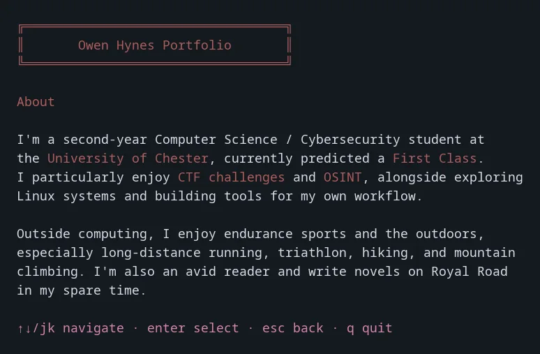

01 / Terminal application
SSH portfolio
A portfolio you can browse without leaving your terminal. Built with Go, Wish and Bubble Tea, it presents projects, experience and contact details through a keyboard-driven interface. Python scripts exercise real SSH sessions to check navigation and clean exits.
Languages / Go · PythonGitHub